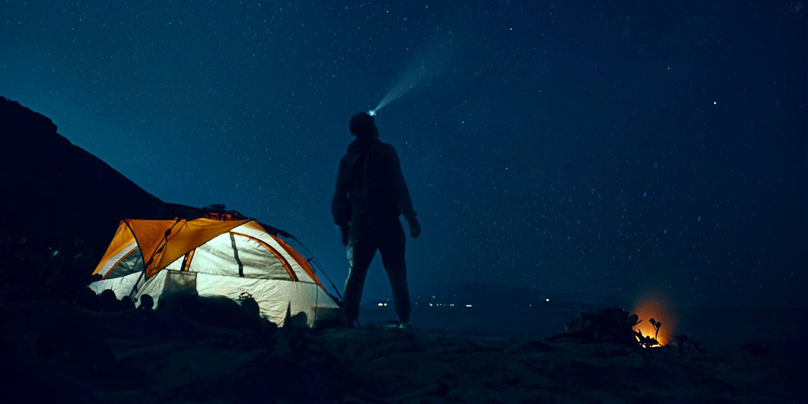
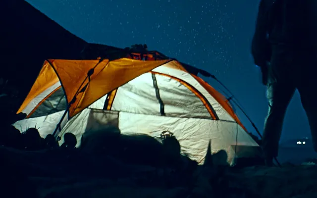

Travel Solo. Travel Smart. Travel Fearlessly.
Your trusted companion for safer, smarter and more confident solo adventures.
Preparation is what makes independence feel easy
When you travel alone there is nobody beside you to double-check the plan. SoloVoyage helps you do it yourself: read practical safety advice, turn it into tasks, and keep what you need close.
No guide can remove risk or guarantee safety. Good preparation means fewer surprises, and knowing your next step when one happens.
- Read101 short guides in 10 categories.
- PrepareA trip plan, checklist, packing list and document status.
- CarrySaved guides and your own emergency contacts.
Eleven categories, from first research to first aid
Follow them in order as you plan, or go straight to the one you need.
- Pre-Trip FoundationResearch, insurance, documents and the plans to make before you pack.
- Packing & PreparationWhat to bring, what to leave behind, and how to carry it.
- Transportation SafetyAirports, taxis, layovers and long rides, handled with confidence.
- Accommodation SafetyChoose a secure place to stay and make the room your own.
- Daily ExplorationStreet sense for new neighborhoods, crowds and transit.
- Money & ValuablesProtect cash, cards and belongings with simple habits.
- Digital SafetyPhones, Wi-Fi, social media and the trail you leave online.
- Food & Drink SafetyEnjoy local food and nights out with less risk.
- Social SafetyMeet people, make friends and date on your own terms.
- Emergency ResponseWhat to do, in order, when something goes wrong.
- The Full ChecklistForty-eight actions for before, during and just in case, with saved progress.
Guides worth reading first
Research Your Destination Like a Detective
Look past the brochures and build an honest picture of the place before you book.
Master the Art of Sharing Your Plans
Give at least two reliable people your itinerary and agree what happens if you go quiet.
Use Official Taxi Services Only
Find the official stand, check the car, and share the plate before you get in.
Know Where Emergency Exits Are
Walk the route to two exits and count the doors on the way.
Divide Your Money Between Multiple Places
The three-stash rule: wallet, money belt, emergency reserve.

Get ready before you go
Six areas cause most of the avoidable stress. Sort each one while you are still at home.
- DocumentsCheck validity, make copies and track what is ready.Track documents
- AccommodationChoose the area first, then check locks and exits.Stay securely
- TransportationPlan the airport run and learn the late-night options.Move safely
- MoneySplit cash and cards, and keep a reserve apart.Protect money
- Digital securitySecure your phone, accounts and location.Lock it down
- Emergency readinessSave numbers and contacts while you are calm.Get ready
Your checklist, as it stands
48 actions for before you leave, while you travel and in an emergency. Add your own, print it, pick up where you stopped.
Calm, clear steps
Prepare for the day something goes wrong
Most trips never need this page. Spend ten minutes on it anyway, so that your numbers and next steps are ready.
Questions travellers ask
Is SoloVoyage free? Do I need an account?
It is free and open source, and there is no account. Your trips, lists and saved guides are kept in your own browser.
Where is my information stored?
In this browser's local storage on your device. It is not encrypted, so anyone who can use this browser profile could read it. You can export or delete it from the privacy page.
Does it work offline?
After your first visit over a secure (https) connection, the guides, tools and Emergency Center are saved for offline use. External links, official advisories and anything live still need a connection. See what works offline.
Can SoloVoyage tell me whether a destination is safe?
No. It does not rate countries or show live risk data. It helps you prepare and points you to official government sources.
Can it contact emergency services for me?
No. SoloVoyage cannot call for help, track you or send alerts. In an emergency, use your phone to call the local emergency number. The Emergency Center explains how to prepare.
How reliable is the advice?
The guides are general good practice, not legal or medical advice. Rules differ by country and change, so check official sources for anything that matters to your trip.
Before you travel, give it one good hour
Start a plan, tick what you have done, and see what is left.